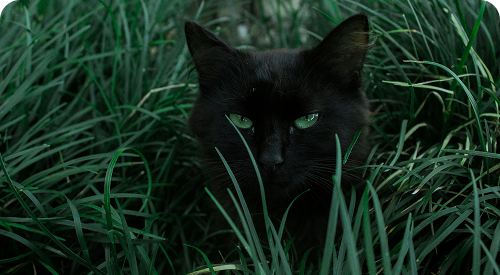
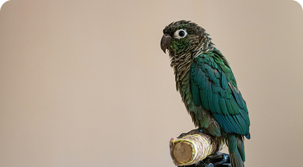
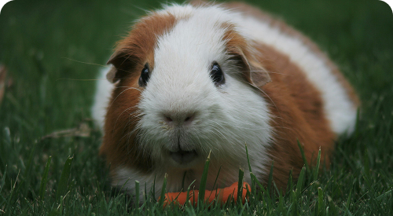
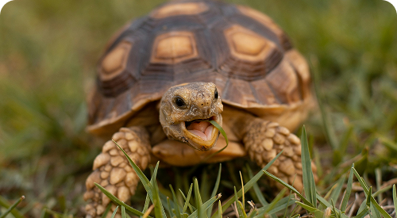
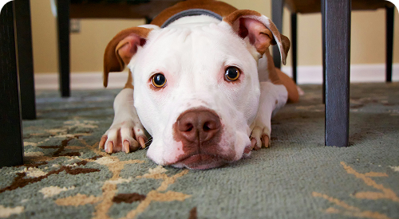

Luke
Cachorro • Sem raça definida • 2 meses
VacinadoEncontre seu novo melhor amigo e prepare-se para uma amizade para toda a vida.
Conheça os pets disponíveis e abra o perfil para ver mais detalhes.
Cachorro • Sem raça definida • 2 meses
Vacinado
Gato • Sem raça definida • 1 ano
VacinadaGato • Sem raça definida • 2 anos
Vacinado
Agapornis • 5 meses
Saúde acompanhada
Porquinho-da-Índia • 7 meses
Saúde acompanhada
Jabuti-tinga • 8 meses
Saúde acompanhada
Cachorro • Sem raça definida • 3 meses
VacinadoCachorro • Sem raça definida • 3 anos
VacinadaA adoção responsável é um ato de amor e compromisso para toda a vida.
Respostas rápidas para tornar a adoção mais consciente e segura.